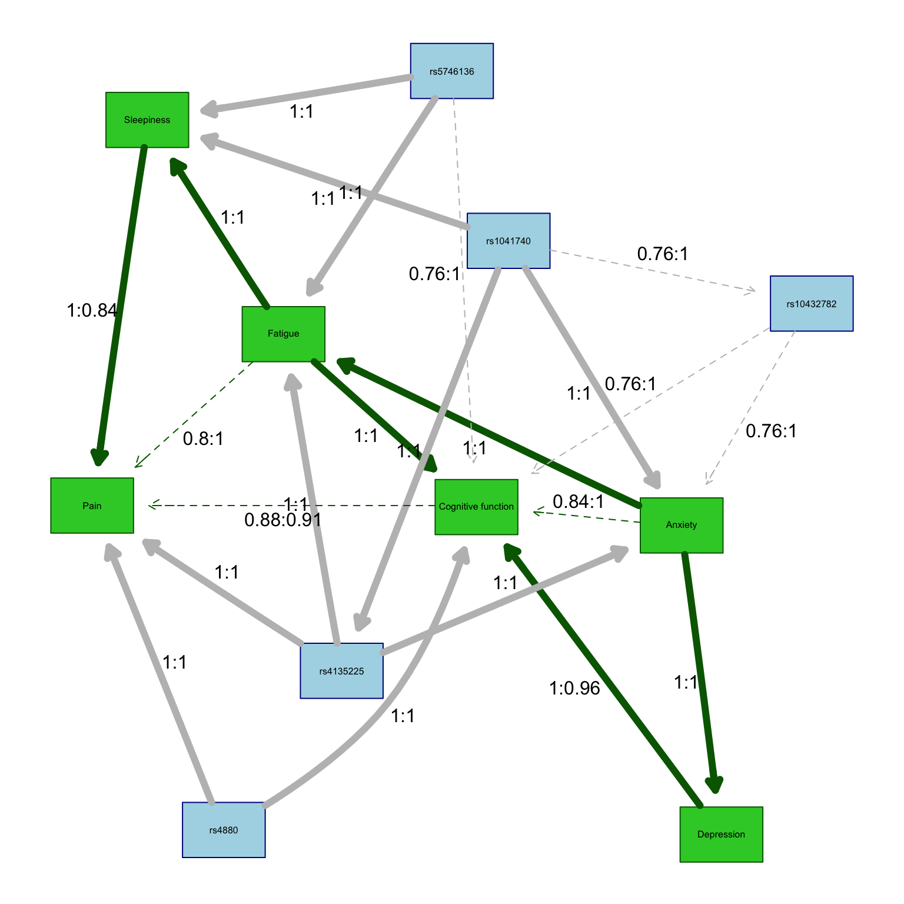

library(tidyverse)
library(lme4)
library(bnlearn)
library(parallel)
library(graph)
library(pander)
library(ggnetwork)
library(Rgraphviz) 3 bnlearn
3.1 Overview
Note this code is dependent upon code from the data preparation section which creates the mvBIMBAM input files detailed below.
3.1.1 Acknowledgements
This code was adapted from previous work led by Jerry Zhang, Lacey Heinsberg, and Daniel Weeks:
Zhang JZ, Heinsberg LW, Krishnan M, Hawley NL, Major TJ, Carlson JC, Harré Hindmarsh J, Watson H, Qasim M, Stamp LK, Dalbeth N, Murphy R, Sun G, Cheng H, Naseri T, Reupena MS, Kershaw EE, Deka R, McGarvey ST, Minster RL, Merriman TR, Weeks DE. Multivariate analysis of a missense variant in CREBRF reveals associations with measures of adiposity in people of Polynesian ancestries. Genet Epidemiol. 2023 Feb;47(1):105-118. doi: https://doi.org/10.1002/gepi.22508. PMID: 36352773; PMCID: PMC9892232.
which was created/adapted from:
Scutari M, Howell P, Balding DJ, Mackay I. Multiple Quantitative Trait Analysis Using Bayesian Networks. Genetics. Genetics; 2014 Apr 11;198(1):129–137. PMID: 25236454 PMCID: PMC4174925 DOI: https://doi.org/10.1534/genetics.114.165704
NOTE: Some of the functions were copied from the bnlearn example at Link as allowed under the Creative Commons Attribution-Share Alike License.
3.1.2 bnlearn
The R package bnlearn is helpful for learning the graphical structure of Bayesian networks, estimating their parameters, and performing some useful inference. Installation instructions can be found in the README file.
3.2 Load Libraries
3.3 Read in the synthetic dataset
As detailed in created in the data preparation section, the synthetic phenotype data created for this example were adjusted for age and sex, quantile normalized, and outliers were removed. The quantile normalized adjusted data set is read in below. Please see the introduction section for more details about the data set and variables.
df <- readRDS("data/QuantNorm.rds") ###CUSTOMIZE** (if input file name was changed in 00_ workflow)Read in trait/gene names created there as well.
load("./data/TraitsGenes.RData", verbose=TRUE) ###CUSTOMIZE** (if input file name was changed in 00_ workflow)Loading objects:
traits
genes
trait_mapping
custom_labels
custom_labels2
df_vertex_tableAlternatively, store this trait/gene name information manually as shown below.
# Define the phenotypes of interest
traits <- c("EMO_tscore", "bdito", "FAT_tscore", "paohcif", "EPSscore", "pain") ###CUSTOMIZE**
trait_mapping <- c("Anxiety", "Depression", "Fatigue", "Cognitive function", "Sleepiness", "Pain") ###CUSTOMIZE**
custom_labels <- setNames(trait_mapping, traits)
# Create expanded custom labels
custom_labels2 <- c(custom_labels, setNames(genes, genes))
# Define variants of interest
genes <- c("rs4880", "rs5746136", "rs1041740", "rs10432782", "rs4135225", "rs7522705") ###CUSTOMIZE**3.4 Bayesian Network estimation
3.4.1 Load functions
For simplicity, all bnlearn analysis and plotting functions are stored in see bnlearn_functions.R in the GitHub repository. See that file for details.
source("./bnlearn_functions.R")3.4.2 Apply functions and visualize results
3.4.2.1 Data summaries
# Check dimensions of the synthetic data used here
dim(df)[1] 763 12# Summary of data
summary(df) rs4880 rs5746136 rs1041740 rs10432782
Min. :0.0000 Min. :0.0000 Min. :0.0000 Min. :0.0000
1st Qu.:0.0000 1st Qu.:0.0000 1st Qu.:0.0000 1st Qu.:0.0000
Median :1.0000 Median :0.0000 Median :0.0000 Median :0.0000
Mean :0.9725 Mean :0.4404 Mean :0.4312 Mean :0.3028
3rd Qu.:1.0000 3rd Qu.:1.0000 3rd Qu.:1.0000 3rd Qu.:1.0000
Max. :2.0000 Max. :2.0000 Max. :2.0000 Max. :2.0000
rs4135225 rs7522705 EMO_tscore bdito
Min. :0.0000 Min. :0.0000 Min. :-8.598853 Min. :-8.142873
1st Qu.:0.0000 1st Qu.:0.0000 1st Qu.:-4.745668 1st Qu.:-4.745668
Median :1.0000 Median :1.0000 Median :-1.117270 Median :-1.117270
Mean :0.6606 Mean :0.7339 Mean :-0.000116 Mean : 0.001758
3rd Qu.:1.0000 3rd Qu.:1.0000 3rd Qu.: 3.607629 3rd Qu.: 3.607629
Max. :2.0000 Max. :2.0000 Max. :16.803582 Max. :17.664804
FAT_tscore paohcif EPSscore
Min. :-8.598853 Min. :-8.598853 Min. :-8.598853
1st Qu.:-4.802835 1st Qu.:-4.802835 1st Qu.:-4.876630
Median :-1.117270 Median :-1.117270 Median :-0.885189
Mean :-0.000098 Mean :-0.001958 Mean : 0.000935
3rd Qu.: 3.607629 3rd Qu.: 3.607629 3rd Qu.: 3.607629
Max. :17.664804 Max. :17.664804 Max. :17.664804
pain
Min. :-8.370863
1st Qu.:-4.802835
Median :-1.278710
Mean :-0.003648
3rd Qu.: 3.468126
Max. :17.664804 # Correlation structure of data
cor(df[,traits]) EMO_tscore bdito FAT_tscore paohcif EPSscore pain
EMO_tscore 1.0000000 0.5990665 0.6372831 0.5440664 0.1828286 0.2252510
bdito 0.5990665 1.0000000 0.4163014 0.5059705 0.1838254 0.2103236
FAT_tscore 0.6372831 0.4163014 1.0000000 0.5600751 0.3750783 0.3998224
paohcif 0.5440664 0.5059705 0.5600751 1.0000000 0.1374550 0.2780501
EPSscore 0.1828286 0.1838254 0.3750783 0.1374550 1.0000000 0.4317377
pain 0.2252510 0.2103236 0.3998224 0.2780501 0.4317377 1.0000000# View list of traits/SNPs of interest
traits[1] "EMO_tscore" "bdito" "FAT_tscore" "paohcif" "EPSscore"
[6] "pain" genes[1] "rs4880" "rs5746136" "rs1041740" "rs10432782" "rs4135225"
[6] "rs7522705" 3.4.2.2 Regular graph
The run_plot_graph function calls the fit.the.model() and xval.the.model() functions to learn and visualize the Bayesian networks in the data. This function also customizes node labels and appearance, and then returns results related to the network analysis. Note that the following function uses parallel computing which involves breaking down a complex task into smaller subtasks that can be executed simultaneously in parallel, by multiple processors or computers to speed up computationally intense calculations.
The fit.the.model() function constructs the Bayesian network model by employing a constrained learning algorithm based on conditional independence testing, specifically the semi-interleaved HITON-PC method. In this process, the algorithm identifies “parent-child” relationships within the network, where nodes represent either phenotypic traits or genetic variants, and edges signify associations between these nodes. Notably, traits can have parent nodes that are either genetic variants or other traits, but they can only serve as parents to other traits, adhering to the constraint that traits do not act on genetic variants (since genotypes are constant across an individual’s lifespan).
To enforce this constraint, a “blacklist” is created using the tiers2blacklist() function, preventing arcs from being directed towards specific nodes. This restriction aims to guide the learning process by ensuring that known causal relationships are inferred in the correct direction from genetic variants to traits, while also allowing for customization to blacklist other traits if needed (e.g., you can customize this to force/restrict a trait->trait relationship).
After the networks are learned, the nodes are categorized into subsets for visualization, and the network structures are determined by maximizing the Bayesian Information Criteria (BIC). This approach facilitates the construction of Bayesian networks that capture probabilistic relationships between traits and genetic variants, with the learned structures reflecting potential causal associations.
Further details on the methodology can be found at http://www.bnlearn.com/research/genetics14/.
The xval.the.model() function performs model training using n-fold cross-validation (in the case of this example, 5-fold cross-validation).
During this process, the data set is divided into multiple partitions, with each partition serving as the test set while the remaining data is used for training. This process is repeated iteratively to ensure that all data points are included in the test set at least once.
During each fold of cross-validation, the following steps are performed:
- Data Splitting: The dataset is divided into a training set (dtraining) and a test set (dtest).
- Model Fitting: A Bayesian network model is fitted to the training data using the
fit.the.model()function. This model captures the probabilistic relationships between phenotypic traits and genetic variants. - Prediction: The model is used to predict the values of phenotypic traits on the test set. These predictions are stored in the prediction matrix.
- Posterior Estimation: Posterior estimates are computed for each trait based on the test data. These estimates are stored in the posterior matrix.
- Correlation Computation: The correlations between the predicted and observed values for each trait are calculated, both before (predcor) and after (postcor) cross-validation. These correlations provide a measure of the model’s predictive performance.
- Ridge Regression (Optional): If the ridge parameter is set to true, ridge regression is applied to certain nodes of the Bayesian network model to improve model performance.
Finally, the function returns various results, including the predicted values, posterior estimates, observed values, and correlation coefficients for each trait. Additionally, it provides the learned models for each fold of cross-validation. This process allows for the assessment of how well the Bayesian network model generalizes to unseen data and provides insights into its predictive capabilities.
Here, we will call the above functions and plot the base graph showing only the directions of association but not the strengths.
set.seed(6)
results <- run_plot_graph(data = df, k_crossval = 5, k_iterations = 5, alpha = 0.1, ncluster = 8, custom_labels = custom_labels2) * overall cross-validated correlations:
> PREDCOR( EMO_tscore ): 0.3450264
> POSTCOR( EMO_tscore ): 0.3446027
> PREDCOR( bdito ): 0.5794972
> POSTCOR( bdito ): 0.1489537
> PREDCOR( FAT_tscore ): 0.7323366
> POSTCOR( FAT_tscore ): 0.4693942
> PREDCOR( paohcif ): 0.6703178
> POSTCOR( paohcif ): 0.3108483
> PREDCOR( EPSscore ): 0.4307685
> POSTCOR( EPSscore ): 0.2788149
> PREDCOR( pain ): 0.5086095
> POSTCOR( pain ): 0.3383055
* overall cross-validated correlations:
> PREDCOR( EMO_tscore ): 0.3668206
> POSTCOR( EMO_tscore ): 0.3625489
> PREDCOR( bdito ): 0.5824107
> POSTCOR( bdito ): 0.1726548
> PREDCOR( FAT_tscore ): 0.7340804
> POSTCOR( FAT_tscore ): 0.4734181
> PREDCOR( paohcif ): 0.6728188
> POSTCOR( paohcif ): 0.3165817
> PREDCOR( EPSscore ): 0.4332637
> POSTCOR( EPSscore ): 0.2767088
> PREDCOR( pain ): 0.516585
> POSTCOR( pain ): 0.3418256
* overall cross-validated correlations:
> PREDCOR( EMO_tscore ): 0.3362601
> POSTCOR( EMO_tscore ): 0.3326324
> PREDCOR( bdito ): 0.6035443
> POSTCOR( bdito ): 0.1830617
> PREDCOR( FAT_tscore ): 0.7327031
> POSTCOR( FAT_tscore ): 0.4690066
> PREDCOR( paohcif ): 0.6564999
> POSTCOR( paohcif ): 0.3149205
> PREDCOR( EPSscore ): 0.4288491
> POSTCOR( EPSscore ): 0.2884573
> PREDCOR( pain ): 0.5386219
> POSTCOR( pain ): 0.347826
* overall cross-validated correlations:
> PREDCOR( EMO_tscore ): 0.3339423
> POSTCOR( EMO_tscore ): 0.3321631
> PREDCOR( bdito ): 0.5858688
> POSTCOR( bdito ): 0.163959
> PREDCOR( FAT_tscore ): 0.7323323
> POSTCOR( FAT_tscore ): 0.471667
> PREDCOR( paohcif ): 0.674619
> POSTCOR( paohcif ): 0.3233496
> PREDCOR( EPSscore ): 0.4576816
> POSTCOR( EPSscore ): 0.2933258
> PREDCOR( pain ): 0.5089625
> POSTCOR( pain ): 0.3591223
* overall cross-validated correlations:
> PREDCOR( EMO_tscore ): 0.3341934
> POSTCOR( EMO_tscore ): 0.3305305
> PREDCOR( bdito ): 0.590734
> POSTCOR( bdito ): 0.130023
> PREDCOR( FAT_tscore ): 0.7350113
> POSTCOR( FAT_tscore ): 0.4731612
> PREDCOR( paohcif ): 0.670765
> POSTCOR( paohcif ): 0.3121788
> PREDCOR( EPSscore ): 0.4389516
> POSTCOR( EPSscore ): 0.2829565
> PREDCOR( pain ): 0.5230457
> POSTCOR( pain ): 0.3412395
EMO_tscore bdito FAT_tscore paohcif EPSscore pain
0.3432486 0.5884110 0.7332928 0.6690041 0.4379029 0.5191649
EMO_tscore bdito FAT_tscore paohcif EPSscore pain
0.3404955 0.1597304 0.4713294 0.3155758 0.2840527 0.3456638
threshold: 0.6
min strength > threshold: 0.76
strength: 0 0 0 0 0 0 0 0 0 0 0 0 0 0 0 0 0 0 0 0 0 0 0 0 0 0 0 0 0 0 0 0 0 0 0 0 0 0 0 0 0.04 0.04 0.08 0.08 0.08 0.08 0.12 0.12 0.12 0.12 0.12 0.12 0.16 0.16 0.2 0.2 0.32 0.32 0.36 0.36 0.4 0.4 0.6 0.6 0.76 0.76 0.76 0.76 0.76 0.76 0.76 0.76 0.8 0.8 0.84 0.84 0.88 0.88 1 1 1 1 1 1 1 1 1 1 1 1 1 1 1 1 1 1 1 1 1 1 1 1 1 1 1 1 1 1 1 13.4.2.3 Labeled high-strength graph
Here we redraw the graph adding strengths/directions to the association lines.
The strength and directionalities of the edges of the Bayesian networks are inferred through an iterative process so resulting networks vary a bit from run to run. As such, representative networks (i.e., averaged) are plotted.
The code below calls in the function created above to add specific details on the strength (Es) and direction (Ed) of each edge that summarize the results across the total number of iterations.
Edge strength is a measure of confidence of that edge while fixing the rest of the network structure and is defined as the empirical frequency a specific edge is observed over a set of networks learned from iterations (i.e., the number of times the edge was present out of the total number of iterations).
Edge direction represents the probability of the edge’s direction conditional on the edge’s presence within the network (i.e., the number of times the edge traveled in a specific direction out of the total number of iterations in which it was present).
An edge is included in the network graph if its strength is larger than a significance threshold learned from the iterative samples.
# Redraw graph adding strengths/directions to association lines using function created above
# Here, we use a threshold of 0.9 to indicate "strong" associations
# In this case, edges with a strength >0.9 will be solid, while edges with a strength <0.9 will be dashed
set.seed(6)
redraw.graph.labels(
results$averaged2,
results$strength2,
results$averaged,
results$traits,
custom.threshold = 0.90
)
Here we can visualize the strengths and directions as a table.
# Visualize strengths/directions as a table
results$strength2 %>%
filter(strength > 0 & direction > 0 & strength > results$threshold) %>%
arrange(strength) %>% pander()| from | to | strength | direction |
|---|---|---|---|
| rs1041740 | rs10432782 | 0.76 | 1 |
| rs5746136 | Cognitive function | 0.76 | 1 |
| rs10432782 | Anxiety | 0.76 | 1 |
| rs10432782 | Cognitive function | 0.76 | 1 |
| Fatigue | Pain | 0.8 | 1 |
| Anxiety | Cognitive function | 0.84 | 1 |
| Pain | Cognitive function | 0.88 | 0.09091 |
| Cognitive function | Pain | 0.88 | 0.9091 |
| Anxiety | Depression | 1 | 1 |
| Anxiety | Fatigue | 1 | 1 |
| Depression | Cognitive function | 1 | 0.96 |
| Fatigue | Sleepiness | 1 | 1 |
| Fatigue | Cognitive function | 1 | 1 |
| Sleepiness | Pain | 1 | 0.84 |
| Pain | Sleepiness | 1 | 0.16 |
| rs1041740 | Anxiety | 1 | 1 |
| rs1041740 | Sleepiness | 1 | 1 |
| rs1041740 | rs4135225 | 1 | 1 |
| rs4135225 | Anxiety | 1 | 1 |
| rs4135225 | Fatigue | 1 | 1 |
| rs4135225 | Pain | 1 | 1 |
| rs4880 | Pain | 1 | 1 |
| rs4880 | Cognitive function | 1 | 1 |
| rs5746136 | Fatigue | 1 | 1 |
| rs5746136 | Sleepiness | 1 | 1 |
| Cognitive function | Depression | 1 | 0.04 |
3.4.2.4 ggnetwork graph
Finally, we redraw the graph again. This time, we are changing the colors, line types, and using ggrepel so that node and edge labels do not overlap.
# Redraw graph in black and white using ggnetwork through the function created above
set.seed(6)
redraw.label.ggnet(results$averaged2,
results$strength2,
results$averaged,
results$traits,
df_vertex_table = df_vertex_table)Interpretation: Given the complexity of this plot, let’s focus on breaking apart a few results for a single variant, rs5746136. In this example figure, we see direct associations (solid arrows pointing away from the variant) between the rs5746136 with sleepiness and fatigue, and a weaker direct association (dashed line pointing away from the variant) with cognitive function. We also observe indirect associations between rs5746136 and pain through sleepiness, which can be interpreted as pain being conditionally independent of rs5746136 given the presence of sleepiness.
In this figure, the strengths (Es) and directions (Ed) of the relationships are also depicted along the edges (Es:Ed). As described above, the strength is a measure of confidence of that edge while fixing the rest of the network structure and is defined as the empirical frequency a specific edge is observed over a set of networks learned from iterations (i.e., the number of times the edge was present out of the total number of iterations). Edge direction represents the probability of the edge’s direction conditional on the edge’s presence within the network (i.e., the number of times the edge traveled in a specific direction out of the total number of iterations in which it was present). So in this figure, we see an association between rs5746136 and fatigue with Es:Ed values of 1:1. This means that the edge was present in 100% of all iterations and the relationship traveled from the rs5746136 variant (“parent”) to fatigue (“child”) 100% of the time. Note that in our “blacklist” code above, we specified that all variants could only be a “parent” and not a “child” – so directions of 1 on arrows travelling from variants to symptoms are expected. Note that, as the arrow traveling from cognitive function to pain illustrates, edge strength and direction may be less than 1. With Es:Ed values of 0.88:0.91, this relationship was observed in 88% of iterations but traveled in the shown direction in only 91% of realizations. Finally, note that in the figure edges with a strength >0.9 are solid, while edges with a strength <0.9 are dashed.
3.5 Conclusion
And with that, we conclude our bnlearn tutorial! We hope that this code is documented in enough detail so that you can easily adapt it for your own projects, but feel free to reach out with any questions! Please see the mvBIMBAM chapter for the mvBIMBAM tutorial!